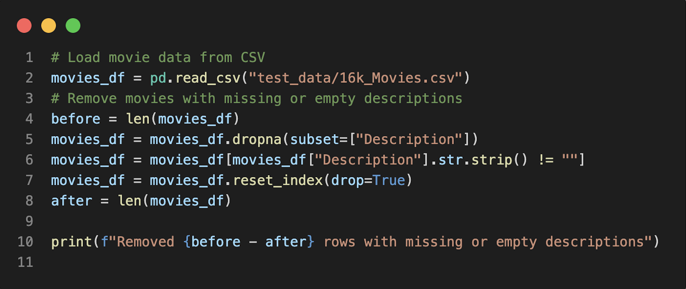
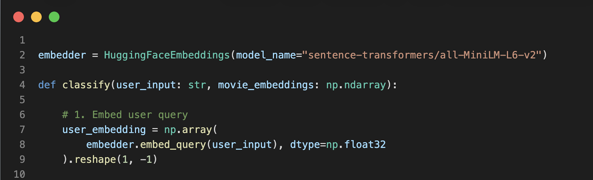
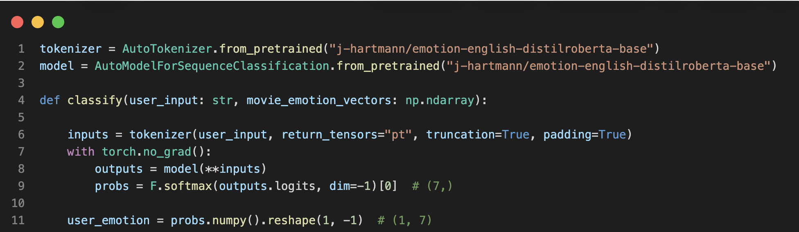
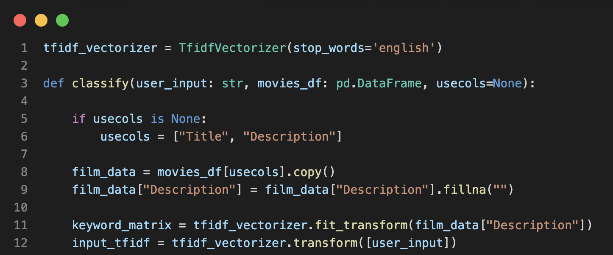
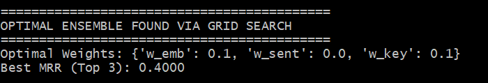

Application overview
The Film Finder application is implemented as a web based system using Flask as the backend framework. The application allows users to enter a free text description of a movie they would like to watch and returns a list of recommended movies based on content similarity.
The application workflow follows a standard request response pattern:
- The user enters text in the web interface.
- The text is submitted from the HTML form to a Flask route.
- The Flask route forwards the input text to the machine learning pipeline.
- The machine learning models compute similarity scores and generate ranked results.
- Flask renders a response page displaying the recommended movies.
Research question
There is many machine learning methods that can be used to classify texts. Texts can be broken down into
keyword-,
or emotion-vectors and then their similarity to other vectors can be measured using cosine similarity.
In this application, we use three different ways of classifying user input to try to give a movie
recommendation
that takes the words and emotions connected to those words into account.
The question that this project build upon is:
How can keyword, semantic, and emotion-based similarity be combined in a movie recommendation system?
Data collection (Samuel)
Explain where the data comes from.
For example, scraped from a social media platform or taken from a public dataset.
Describe how many rows and columns you have, which time period the data covers,
and mention any important variables.
A challenge for every ML-learning implementation is data. If the model has lacking
or simply not enough data, the performance will be weakened. There is a couple of
ways that engineers deal with the problem of having to little data, like for example
creating synthetic data and training ones model on “made-up” data points [1].
In the case of this project however, this is not an option since we want to find real movies to
recommend a potential viewer. The data also needs to fit the models implementation. For example,
if the model is made to recognize movie reviews, the dataset can't contain movie synopses (and vice
versa).
The idea of this project was that the user can insert a descriptive text about the movie, and then get
movies
recommended that fit that description. So a fitting data collection is a set of movie descriptions.
When choosing what to use as the base dataset for the project, a bunch of different datasets where
compared
and looked at. The project group wanted a dataset that:
- Contains movie titles and descriptions/reviews
- Is fairly up-to-date
- Can be implemented in the model
- Preferably have a lot of data
The dataset that ended up as the base for the other two classifiers in project is a dataset that contains titles, genres, descriptions and other information from Metacritic. The dataset contains over 16 000 movies and are available though Kaggle. With this dataset, a description of a movie could easily be connected to the movies title via indexing which fit the project perfectly. Keywords, sentiment and embeddings could be created from the descriptions. The set contains a very large number of movies, which hopefully will give the project high accuracy. The dataset is also fairly up to date and contains movies all the way to 2024. In conclusion, two different datasets were used together. One of them was used for keyword extraction and the input could be classified using TF-IDF vectorization. The other one were used for sentiment analysis and embeddings, were the input by the user were compared to all descriptions from the dataset.
Data processing
The data processing stage focused on preparing the movie dataset so that it could be used consistently by all models in the recommendation system. The same processing pipeline was applied to all movies, following a fixed sequence of steps: data validation, feature selection, and feature engineering. This ensured that all models operated on the same input data and that their outputs could be safely compared and combined.
Data cleaning & validation
The first step was to validate the dataset. The description field was inspected for missing or empty values, since all models rely on textual input. A filtering step was applied to remove such entries. This validation confirmed that no movies contained missing or empty descriptions, indicating that the dataset was already clean and suitable for further processing.
Here’s the data cleaning step we used:

While the dataset itself was not deduplicated during preprocessing, duplicate movie titles were handled at the output stage to improve the clarity of recommendations presented to the user.
Feature Selection
After validating the dataset, the description column was selected as the primary input for all models. Other attributes were not used during feature extraction or similarity computation. This ensured a consistent input source across all methods and reduced unnecessary complexity.
Feature Engineering
To enable machine learning models to operate on textual data, the movie descriptions were transformed into numerical representations using multiple feature engineering techniques [1].
For semantic processing, movie descriptions were represented using precomputed semantic sentence embeddings. At runtime, the user’s input was embedded using the same model to produce a comparable numerical representation. This allows movies with similar meaning to be matched even when different wording is used [3].

For emotion based processing, each movie description was associated with an emotion probability distribution across seven categories: anger, disgust, fear, joy, neutral, sadness, and surprise. These emotion representations were generated in a separate preprocessing step and stored for later use. At runtime, the user’s input text was processed using the same emotion classification model to generate a corresponding emotion probability distribution. This representation captures the emotional characteristics of the input text and enables comparison with the emotional profiles of movie descriptions [4].

For keyword based processing, TF-IDF (Term Frequency–Inverse Document Frequency) representations were
generated at runtime from the movie descriptions. The TF-IDF vectorizer was fitted on the full set of
movie descriptions to learn the vocabulary and corresponding term weights.
When the user provided input text, it was transformed into a TF-IDF vector using the same fitted
vectorizer. This representation highlights important keywords and terms that can later be used to
compare the user input with movie descriptions [2].

By using these three representations, each movie description could be analyzed from multiple perspectives: semantic meaning, emotional tone, and keyword relevance. This multi-faceted feature engineering approach enabled the recommendation system to capture different aspects of similarity between the user’s input and the movie dataset.
Modeling
After data processing and feature engineering, the recommendation system applies multiple models to compare the user’s input with the movie dataset. Each model focuses on a different aspect of similarity: semantic meaning, emotional tone, and keyword overlap. By using several models in parallel, the system can capture complementary information from the data.
Semantic similarity model
For semantic modeling, cosine similarity was used to compare the semantic sentence embedding of the user’s input with the precomputed semantic embeddings of all movie descriptions. Both the user input and the movie descriptions were represented using the same sentence embedding model. This ensures that the similarity scores reflect how closely the meanings of the texts align, even when different wording is used [3].
This model is particularly effective for capturing contextual similarity and paraphrased expressions, where exact keyword overlap may be limited.
Emotion similarity model
For emotion based modeling, cosine similarity was applied to compare the emotion probability distribution of the user’s input with the precomputed emotion probability distributions of the movies. Each vector represents the likelihood of seven emotion categories, allowing the system to match movies based on emotional tone rather than content alone [4].
Movies with similar emotional profiles to the user’s input will receive higher similarity scores, enabling recommendations that align with the desired mood or sentiment.
Keyword similarity model
For keyword based modeling, cosine similarity was used to compare the TF-IDF representation of the user’s input with the TF-IDF matrix of movie descriptions. TF-IDF emphasizes important terms while reducing the influence of common words, making this model effective when the user includes specific keywords, themes, or genres in the input text [2].
This model complements the semantic and emotion based models by focusing on explicit term overlap.
Score normalization & ranking
Each model produces a similarity score for all movies. To ensure that scores from different models are comparable, similarity values were normalized to a common range. The movies were then ranked based on their similarity scores, and the top candidates from each model were selected for further combination in the ensemble stage.
Evaluation (Samuel)
Explain how model performance was measured.
Mention metrics such as accuracy, precision, recall, F1 score, RMSE or similar,
and describe what the numbers mean in your context.
If you compared several models, state which one worked best.
Evaluating ones model is a important part of development of ai tools. In the case of this project, where
there is three separate classifiers, three weights were used. These weights could me set manually to
create another mix of the classifiers. The bigger the weight, the more it that classifier affects the
end result. To test out what set of weights give the best results, a grid search was used. Grid search
is used as a technique to test hyperparameters for a model in a fast way [3]. The project group decided
to gather user inputs by asking members
of a film club to write a description of their favorite movie.
The description
contained one free form text and one set of keywords. This data was previously unseen by any models used
and not connected to the dataset.
To perform hyperparameter optimization the description written by the test-persons were used in a scripts that looped over different combinations of parameters for the three different classifiers.
A python scripts that looked at combinations of different weights were created by the project group.
The results found is displayed in the image bellow:

It was found that a low weight (or actaully, no contribution) for the sentiment analysis gave the best result, and the other two classifiers was similarly accurate and would therefore get the same weight. The results shows that the model do have a hard time finding the movies that the users is looking for, since a accuracy of 0.4 is not particularly high. Other models, more or different data could be sollutions to this porblem. We must not forget however that the test data used were descriptions of certain movies, and performance was measured by checking if the program could pick out that particular movie from the dataset. The idea of the program however is to recommend movies, and in that case sentiment analysis might be a good aspect to have.
After the grid search for best weights were carried out, the project group did some internal testing that showed that some expected movie titles were not given using the calculated weights. For example, this input: a funny movie about a sponge that is best friends with a star should give some output connected to Spongebob, but this was not the case for the given weights. Making the weights bigger than 0.1, like 0.5, solved the issue and gave a more expected result. The weight for sentiment analysis were kept at a lower value at 0.25. The previous descriptions given by the filmclub did also appear with these weights.
Other problems discovered
When the program was tested, one test subject described the movie that he wanted to watch like this: "A movie with a lot of gore". As a human reader, it is clear that the user want to look at a horror movie, preferably with a lot of blood. Even a LLM application would probobly figure this out. However, the result from this program was all of Al Gore's (famous director) movies. This issue probobly comes from the keyword analysis. By using the components currently used in the program, this problem is hard to address, to solve it you need to add something that makes the program understand when something is a name and when its not, and to understand the intended meaning of words that might have two or more different meanings to them.Conclusions from evaluation
It is clear to see that the sentiment analysis does not point the program in the right direction according to the evaluation and the two other classifiers seems to be equally important for a good result. To keep the nature of the three part classifier each classifier will be kept. The embeddings and the keyoword classifiers will get the same weight and the sentiment analysis classifier will get a smaller one. The way that we choose weights can be improved further, but as of right now the program uses 0.5 for embeddings and keywords and 0.25 for sentiment analysis. The grid search gave a result that internal testing from the project group showed to be not effective in some cases.Summary of findings and answer to the research question
This project investigated how semantic similarity, keyword similarity, and emotion similarity can be combined in a text-based movie recommendation system. The results show that combining multiple similarity models improves recommendation quality compared to using a single method. Semantic similarity was the most influential model, as it captures the overall meaning of the user’s input even when different wording is used. Keyword-based similarity performed well when specific terms were included, while emotion-based similarity helped align recommendations with the emotional tone of the input, although its impact was more limited.
References
- Coursera. (2025) What Is Synthetic Data Coursera website https://www.coursera.org/articles/what-is-synthetic-data?
- Mirijam Björk, Oscar Berglin, Julia Karlsson Reverse Movie Review TNM108 blog https://dellacqua.se/education/courses/tnm108/material/project%20archive/2024/p10%202024.pdf
- Scikit-learn developers. (2024). Feature extraction. Scikit-learn documentation. https://scikit-learn.org/stable/modules/feature_extraction.html
- Scikit-learn developers. (2024). TfidfVectorizer. Scikit-learn documentation. https://scikit-learn.org/stable/modules/generated/sklearn.feature_extraction.text.TfidfVectorizer.html
- Reimers, N., & Gurevych, I. (2019). Sentence-BERT. Sentence embeddings using Siamese BERT-networks. Hugging Face model card. https://huggingface.co/sentence-transformers/all-MiniLM-L6-v2
- Hartmann, J. (2022). Emotion English DistilRoBERTa-base. Hugging Face model card. https://huggingface.co/j-hartmann/emotion-english-distilroberta-base
- H2O Grid Search What is Grid Search? H2O website https://h2o.ai/wiki/grid-search/